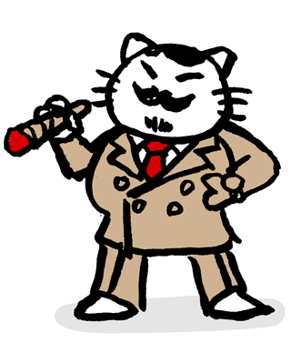
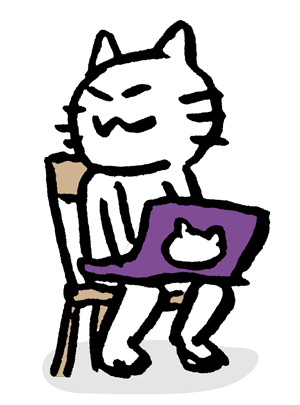
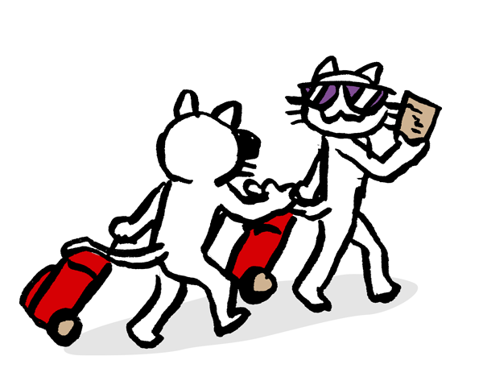

LOCAL RUBY CONFERENCE IN GINZA
ぎんざ Ruby会議 02
Rubyの話を、ぎんざで。
つくる人、学ぶ人、語りたい人。
Rubyを囲んで、また集まりましょう。


開催概要を見る
INFORMATION
開催概要
- 開催日 DATE
- 会場 VENUE
- 株式会社マイベスト
イベントスペース
プログラムや参加方法など、詳しい情報は順次お知らせします。
HELLO, AGAIN.
また、ぎんざで会いましょう。
ぎんざRuby会議02は、Rubyの地域コミュニティ
「Ginza.rb」が主催する地域Ruby会議です。
日々の発見を持ち寄って、話して、つながる。
そんな一日を、ぎんざでご一緒に。
